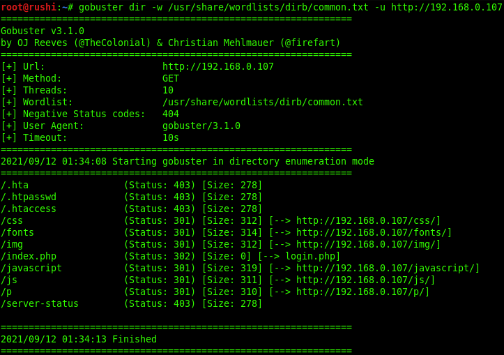
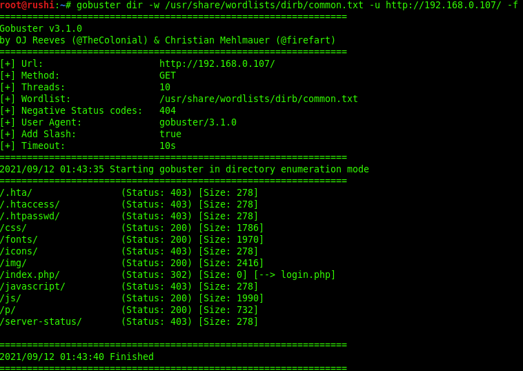
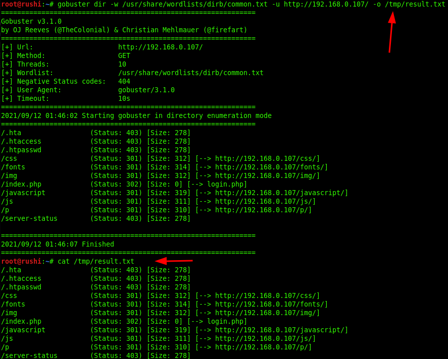
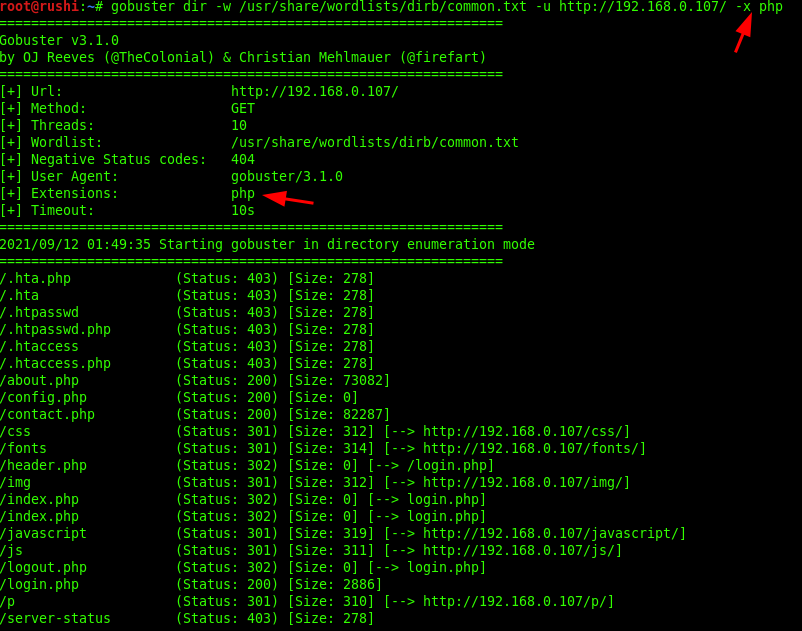

Gobuster - Directory Scanning Tool
Uploaded : Sept 06 2021
Gobuster is a tool used to brute-force on URLs (directories and files) in websites and DNS subdomains.
Common Parameters
-fw – force processing of a domain with wildcard results.
-np – hide the progress output.
-m
-q – disables banner/underline output.
-t
-u
-v – verbose output (show all results).
-w
Dir mode Parameter
-a
-c – use this to specify any cookies that you might need (simulating auth).
-e – specify the extended mode that renders the full URL.
-f – append / for directory brute forces.
-k – Skip verification of SSL certificates.
-l – show the length of the response.
-n – “no status” mode, disables the output of the result’s status code.
-o
-p
-r – follow redirects.
-s
-x
-P – HTTP Authorization password (Basic Auth only, prompted if missing).
-U – HTTP Authorization username (Basic Auth only).
-to – HTTP timeout. Examples: 10s, 100ms, 1m (default: 10s).
DNS mode Parameter
-cn – show CNAME records (cannot be used with ‘-i’ option).
-i – show all IP addresses for the result
Using Wordlist for Directory Brute-Force
You can use -w option for using a particular wordlist, for example, common.txt or medium.txt to launch a brute-force attack for extracting web directories or files from inside the target URL.
Command:
gobuster dir -w /usr/share/wordlists/dirb/common.txt -u http://192.168.0.107
The above command will dump the all possible files and directories with the help of common.txt wordlist.
Obtain Result with Specify Status Code
Using "-s flag" enables the status code for specific value such as 302, 200, 403, and 404 and so on to obtain certain request pages.
Command:
gobuster dir -w /usr/share/wordlists/dirb/common.txt -u http://192.168.0.107-s 302,200
Appending Forward slash
Using "-f flag", appending the forward slash while making brute-force attack on the target URL.
Command:
gobuster dir -w /usr/share/wordlists/dirb/common.txt -u http://192.168.0.107 -f
Saving Output Result inside Text File
Using -o option enables saving output result parameter in a text file which can be useful in the future.
Command:
gobuster dir -w /usr/share/wordlists/dirb/common.txt -u http://192.168.0.107 -o result.txt
We can ensure the result.txt file with the help of cat command
Scan Directory with Specific Extension List
There are a lot of situations where we need to extract the directories of a specific extension over the target server, and then we can use the -X parameter of this scan. This parameter accepts the file extension name and then searches the given extension files over the target server or machine.
Command:
gobuster dir -w /usr/share/wordlists/dirb/common.txt -u http://192.168.0.107 -x php
HTTP AUTHORIZATION (-u username: password)
HTTP Authentication/Authentication mechanisms are all based on the use of 401-status code and WWW-Authenticate response header. The most widely used HTTP authentication mechanisms are Basic. The client sends the user name and password as un-encrypted base64 encoded text.
So, in order to bypass this kind of authentication with the help of Gobuster we have used the command below:
Command:
gobuster dir -w /usr/share/wordlists/dirb/common.txt -u http://192.168.0.107/login.php -U admin -P passwd
DNS Mode
Using -m option is enabled DNS mode which is effective for public network IP and extracts the sub-domains.
Command:
gobuster -m dns -w /usr/share/wordlists/dirb/common.txt -u google.com
Source:
I recommend to complete Nmap lab on TryHackMe https://tryhackme.com/room/easypeasyctf
@2021 Rushi0x04T7. Some rights reserved.